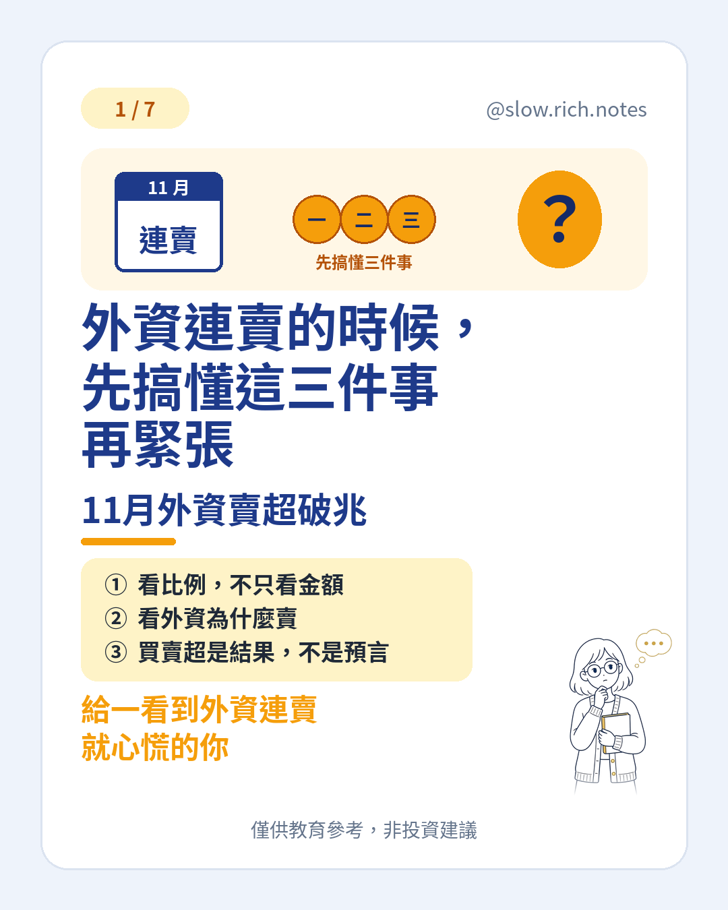

看到「外資連賣」「單月賣超破兆」，心裡緊一下，很正常。帳戶在縮、標題又很大，會想立刻做點什麼。先停一下。這篇不猜明天漲跌，也不叫你買或賣。只把 11 月這波拆開，先搞懂三件事，再決定要不要緊張。
11 月外資賣超台股約 1.12 兆，金額是史上單月最高。這 1.12 兆是證交所統計至 11/27，月底還沒完全算進來。加權指數從 10/6 收盤高點 49,823，跌到 11/20 收盤 36,033，跌了 27.7%。11/27 收在 39,308。跌很多，所以會慌；金額破紀錄，還不等於已經看懂。
第一件：看比例，不只看金額
1.12 兆聽起來像把市場搬走。先看台股自己變多大：上市市值從 2008 年底的 11.7 兆，長到約 118 兆。池子變大以後，同一句「賣超破兆」，占池子的比例不一定比以前更重。
池子變大，同樣金額占得比較少
11 月這筆賣超，占市值大約 0.76%。占市值比例是估算，不是證交所直接公布的百分比。用同一套估算去比，它低於 2020 年 3 月的約 1.05%，也低於 2026 年 3 月的約 0.84%、2011 年 8 月的約 0.83%、2008 年 10 月的約 0.79%。金額最高，比例大約排第 5。市值有一部分是估的，這個名次只適合看個大概。只看「破兆」，很容易把現在想得比 2020 年 3 月更嚴重；換成占比，這次還比較小。
第二件：看外資為什麼賣
外資不是一個人，是很多家機構加總後的淨賣超。有人賣、也有人買，新聞上的數字是相減的結果。賣的理由可能是權重調整、匯率、避險，或漲多之後把部位調回來。這些是可能原因，來自券商或媒體的分析，不是賣超數字本身能證明的事實。
2020、2021、2024、2025 這四年，外資全年都淨賣超，大盤當年卻都上漲。今年到 11/27，外資累計賣超 3 兆 4,909 億，大盤仍上漲 35.7%。這還不是完整的一年，不能拿來和那四個全年直接比誰賣比較多，只說明賣超和「看空台灣」不是同一句話。11/20 外資仍持有上市股票市值 55.6 兆，約占 47.1%。賣了很多，不代表人已經走光。
這波指數怎麼跌下來，可以看11/20 那一周的大跌。大跌之後，止跌訊號可以看哪些，是觀察清單，不是買進訊號。國安基金進場，也不等於底部到了。
第三件：買賣超是結果，不是預言
買賣超記的是已經成交的事。它只告訴你過去這段時間外資淨賣了多少，沒有附帶接下來一定會怎樣。
賣超占市值 0.4% 以上、而且 12 個月後有資料的月份，有 26 個。這 26 個月裡，12 個月後 19 次上漲、7 次下跌。漲的比較多，但後來的漲跌很散，從 −48% 到 +80% 都有，跟一般月份差不多，沒有固定劇本。過去不代表未來。
- 12 個月後上漲 19 次
- 下跌 7 次
過去不代表未來
之後還在跌的例子有，急殺後又回升的例子也有。那是事後才看得到的背景，不是現在可以拿來預測的規則。跌了多少才叫回檔、修正或熊市，可以另外看那一篇的分法。分法是用來認識波動，不是用來決定今天進出。
先搞懂，再決定緊不緊張
三件事放在一起：金額要換成占市值的比例，而且占市值比例是估算；賣超要問可能原因，不要直接當成看空；買賣超是結果，不是預言。1.12 兆是證交所統計至 11/27。看到連賣，先把這三層對一下，再看自己的預備金，和這筆錢什麼時候要用。
還沒開始投資的話，可以先免費領取《投資新手入門清單》，對著清單檢查，而不是跟著標題動作。
僅供教育參考，非投資建議。
來源
- 證交所三大法人買賣金額統計（月，BFI82U；11 月為至 11/27）：BFI82U
- 證交所市場成交資訊（核對指數）：FMTQIK
- 證交所 Fact Book 2008（早期市值）
- 證交所 2008 年報（2008 年市值）
- 金管會證期局：上市、櫃各年度市值
- 金管會金融市場統計
- 加權指數月底收盤（與證交所核對）：Yahoo Finance ^TWII
- 賣超原因為券商或媒體分析，不是確定事實：新光證券、理財周刊、中時
- 外資持股市值：工商時報